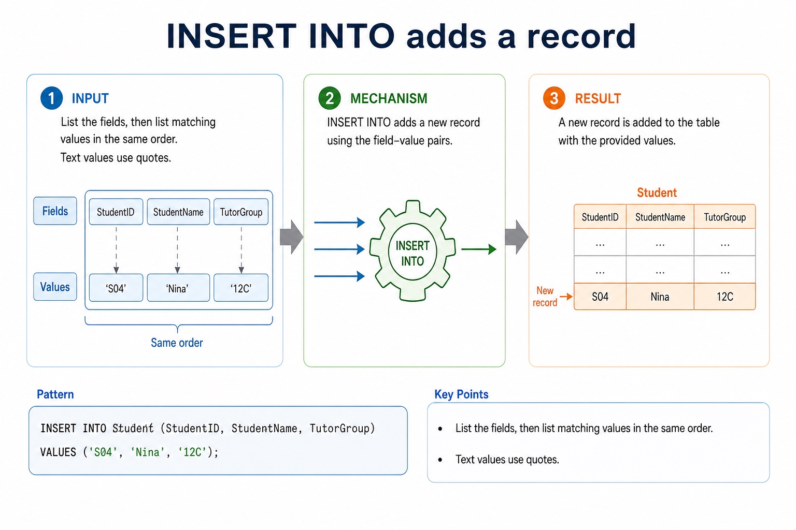
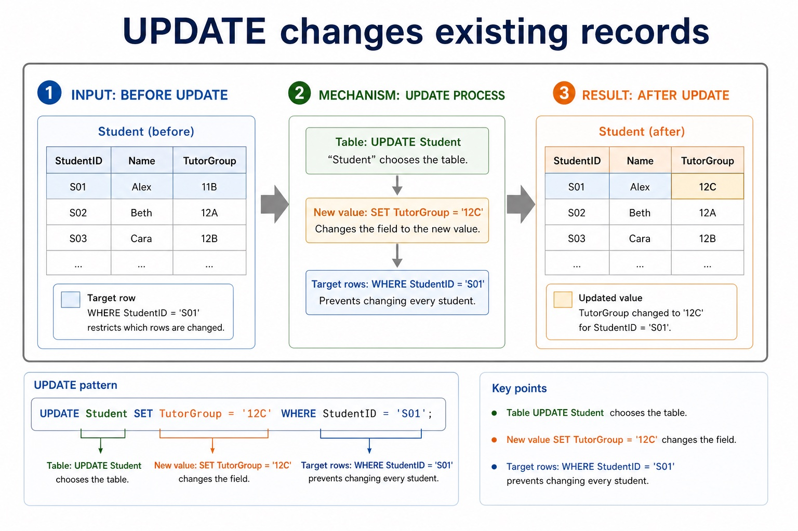

Quick route
Use the diagnostic, learning objectives, first worked example and foundation question. Stop once the learner can explain the central distinction accurately.
Cambridge AS9618 | Paper 1 | Section 8: Databases
Flexible-depth lesson
S8.09, S8.11 | Visual relationships, mechanisms and worked examples.
Part 1 | optional depth
Recall S8.08 before starting this lesson.
Give one accurate definition or method step before continuing. If it is missing, revisit only that prerequisite.
Part 2 | explicit teaching
Complete the default-visible explanation and worked example before using the visual recap.
S8.09 · structure
Required DDL includes CREATE DATABASE, CREATE TABLE and ALTER TABLE. Field types include CHARACTER, VARCHAR, BOOLEAN, INTEGER, REAL, DATE and TIME.
Database design review: connect each file-based limitation to a relational or DBMS mechanism; use entity/table, record/tuple and field/attribute precisely; distinguish candidate, primary, secondary and foreign keys; classify one-to-one, one-to-many and many-to-many relationships; apply referential integrity and indexing; document the design with an E-R diagram; and explain or produce 1NF, 2NF and 3NF designs.
A PRIMARY KEY uniquely identifies a row. A FOREIGN KEY with REFERENCES links a field to a key in another table and supports referential integrity.
A query uses SELECT fields FROM a table, may filter rows with WHERE, sort with ORDER BY and form aggregate groups with GROUP BY. SUM totals values, COUNT counts rows or values, and AVG calculates a mean. An INNER JOIN uses ON to match at most two tables in the required AS queries.
AS DML questions use at most two tables. Write an explicit INNER JOIN between those tables and place the matching key condition after ON; use table-qualified field names where the same field name could be ambiguous.
A complete answer follows the scenario through design, statement and result. It does not claim that a primary key prevents every duplicate fact, that a secondary key must be unique, that normalisation guarantees correctness, or that a three-table/comma-style query is within the AS core boundary.
Required DDL includes CREATE DATABASE, CREATE TABLE and ALTER TABLE.
Field types include CHARACTER, VARCHAR, BOOLEAN, INTEGER, REAL, DATE and TIME.
Database design review: connect each file-based limitation to a relational or DBMS mechanism;
Required DDL includes CREATE DATABASE, CREATE TABLE and ALTER TABLE.
Field types include CHARACTER, VARCHAR, BOOLEAN, INTEGER, REAL, DATE and TIME.
Database design review: connect each file-based limitation to a relational or DBMS mechanism;
Define two related tables / List overdue borrowers: CREATE DATABASE College; then CREATE TABLE Department and CREATE TABLE Student. Student uses INTEGER for StudentID, VARCHAR for Name, DATE for DateOfBirth, BOOLEAN for Active and a DepartmentID foreign key REFERENCES Department(DepartmentID). ALTER TABLE can modify the structure later. SELECT Student.StudentName FROM Student INNER JOIN Loan ON Student.StudentID = Loan.StudentID WHERE Loan.DueDate < '2027-05-01'; uses two tables, one explicit join condition and one separate filter.
Complete a fresh example that demonstrates every target: DDL; DATABASE; TABLE; CHARACTER; VARCHAR; BOOLEAN; INTEGER; REAL; DATE; TIME; ALTER; primary; foreign; REFERENCES. Show all intermediate steps and check the result.
Use these cards and diagrams to reinforce the explanation above; they are not a substitute for it.
Required DDL includes CREATE DATABASE, CREATE TABLE and ALTER TABLE.
Field types include CHARACTER, VARCHAR, BOOLEAN, INTEGER, REAL, DATE and TIME.
Database design review: connect each file-based limitation to a relational or DBMS mechanism;
Use DDL: CREATE DATABASE, CREATE TABLE with CHARACTER/VARCHAR/BOOLEAN/INTEGER/REAL/DATE/TIME, ALTER TABLE, primary and foreign keys.
The syllabus requires CREATE DATABASE, CREATE TABLE, ALTER TABLE, CHARACTER, VARCHAR(n), BOOLEAN, INTEGER, REAL, DATE, TIME, PRIMARY KEY(field) and FOREIGN KEY(field) REFERENCES Table(Field). Each named item remains core.
S8.11 · comparison
INSERT INTO adds a new row. Name the target fields when possible and supply values in the same order with types that match the table definition.
UPDATE changes values in existing rows. SET gives the new value and WHERE selects the rows; omitting WHERE can update every row.
DELETE FROM removes complete rows. WHERE selects which rows are deleted; use UPDATE instead when the record should remain but one field must change.
Before executing UPDATE or DELETE, test the WHERE condition with a SELECT query or otherwise verify which rows match. The condition is part of the data-safety reasoning, not optional punctuation.
Use INSERT for a new row, UPDATE for changed field values and DELETE when selected rows must be removed.
Check the table schema, field types and WHERE condition before constructing the statement.
State which rows are added, changed or removed and check that no unintended row matches.
INSERT INTO Student (StudentID, StudentName, Active) VALUES (17, 'Mina', TRUE); adds one row.
UPDATE Student SET Active = FALSE WHERE StudentID = 17; changes only Mina's Active field.
DELETE FROM Student WHERE StudentID = 17; removes the selected row when the record is no longer required.
Without WHERE, the UPDATE or DELETE statement could affect every row in Student.
Complete a fresh example that demonstrates every target: INSERT; DELETE; UPDATE. Show all intermediate steps and check the result.
Use these cards and diagrams to reinforce the explanation above; they are not a substitute for it.
Use INSERT for a new row, UPDATE for changed field values and DELETE when selected rows must be removed.
Check the table schema, field types and WHERE condition before constructing the statement.
State which rows are added, changed or removed and check that no unintended row matches.
Diagram · 1 of 3

Diagram · 2 of 3

Diagram · 3 of 3

Use INSERT, DELETE and UPDATE to maintain data.
the syllabus names INSERT INTO, DELETE FROM and UPDATE as required data-maintenance statements. Evidence must distinguish adding, removing and changing records and use WHERE when only selected records should be affected.
Part 3 | select by learner need
Question 1. Write DDL to create a Student table with suitable data types, a primary key and one foreign key. Write an INNER JOIN query listing DepartmentName and EmployeeName from Department and Employee, matching their DepartmentID fields.
Answer: CREATE TABLE and named fields; suitable required data types; PRIMARY KEY; FOREIGN KEY with REFERENCES; SELECT includes DepartmentName and EmployeeName; FROM Department; INNER JOIN Employee; ON Department.DepartmentID = Employee.DepartmentID
Marking guidance: Do not award DML statements for a schema-definition task. Do not use a three-table query or replace the required INNER JOIN with comma-style FROM and a WHERE join.
Common error: For the command word write, perform that exact action; do not replace it with an unrelated fact.
Question 2. For Student(StudentID, StudentName, Active), write: (a) an INSERT statement adding StudentID 17 named Mina; (b) an UPDATE making that student's Active value FALSE; and (c) a DELETE removing only that student.
Answer: INSERT INTO Student (StudentID, StudentName, Active) VALUES (17, 'Mina', TRUE); UPDATE Student SET Active = FALSE WHERE StudentID = 17; DELETE FROM Student WHERE StudentID = 17;
Marking guidance: Award statement keyword/structure, matching fields and values, and a safe WHERE condition for UPDATE and DELETE.
Common error: Without WHERE, UPDATE or DELETE can affect every row.
Question 3. Explain why UPDATE and DELETE normally need a checked WHERE condition, and distinguish changing a field from removing a row.
Answer: WHERE limits the affected rows; an unchecked or missing condition can change/delete every row; UPDATE changes selected field values while retaining the row; DELETE removes the selected row
Marking guidance: Require both the safety consequence and the UPDATE/DELETE distinction.
Common error: DELETE does not clear one field; it removes the row.
| Reference | Marks | Command word | Question type |
|---|---|---|---|
| 9618/11/S/25 Q5(e) | 4 | complete | recall |
| 9618/12/S/25 Q5(i) | 4 | design | recall |
| 9618/12/W/25 Q4(c) | 4 | describe | explain |
| 9618/13/S/25 Q6(a) | 4 | complete | recall |
Index only: Cambridge question and mark-scheme wording is not reproduced on this public course page.
Part 4 | close when ready
Students often select every field with *. Correction: exam questions usually specify exactly which fields are required.